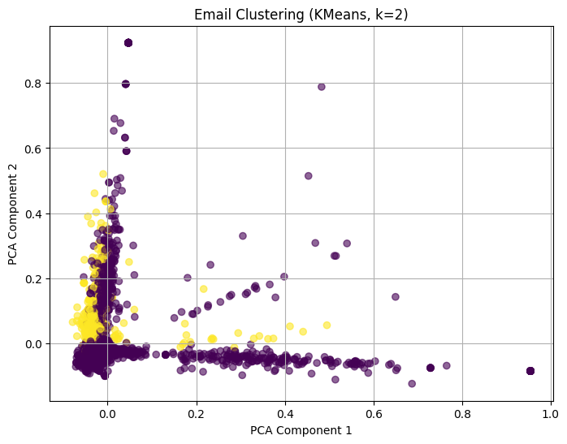

Analisa clutering menggunakan K-Mens#
import liberary
import pandas as pd
import re
import matplotlib.pyplot as plt
from sklearn.feature_extraction.text import TfidfVectorizer, ENGLISH_STOP_WORDS
from sklearn.cluster import KMeans
from sklearn.decomposition import PCA
membaca dataset
from google.colab import files
uploaded = files.upload()
# Baca file CSV
df = pd.read_csv("spam.csv", encoding='ISO-8859-1')
# Lihat 5 data teratas
df.head()
Saving spam.csv to spam (1).csv
| id | Text | Unnamed: 2 | Unnamed: 3 | Unnamed: 4 | |
|---|---|---|---|---|---|
| 0 | 1 | Go until jurong point, crazy.. Available only ... | NaN | NaN | NaN |
| 1 | 2 | Ok lar... Joking wif u oni... | NaN | NaN | NaN |
| 2 | 3 | Free entry in 2 a wkly comp to win FA Cup fina... | NaN | NaN | NaN |
| 3 | 4 | U dun say so early hor... U c already then say... | NaN | NaN | NaN |
| 4 | 5 | Nah I don't think he goes to usf, he lives aro... | NaN | NaN | NaN |
Preprocessing teks
def preprocess_en(text):
text = str(text).lower()
text = re.sub(r'[^a-z\s]', '', text)
tokens = text.split()
tokens = [t for t in tokens if t not in ENGLISH_STOP_WORDS]
return ' '.join(tokens)
# Terapkan ke kolom 'Text'
df['Clean_Text'] = df['Text'].apply(preprocess_en)
df[['Text', 'Clean_Text']].head()
| Text | Clean_Text | |
|---|---|---|
| 0 | Go until jurong point, crazy.. Available only ... | jurong point crazy available bugis n great wor... |
| 1 | Ok lar... Joking wif u oni... | ok lar joking wif u oni |
| 2 | Free entry in 2 a wkly comp to win FA Cup fina... | free entry wkly comp win fa cup final tkts st ... |
| 3 | U dun say so early hor... U c already then say... | u dun say early hor u c say |
| 4 | Nah I don't think he goes to usf, he lives aro... | nah dont think goes usf lives |
TF-IDF Vectorization
vectorizer = TfidfVectorizer(max_features=1000)
X = vectorizer.fit_transform(df['Clean_Text'])
KMeans Clustering (k=2)
kmeans = KMeans(n_clusters=2, random_state=42, n_init=10)
df['Cluster'] = kmeans.fit_predict(X)
Visualisasi hasil clustering
pca = PCA(n_components=2, random_state=42)
reduced = pca.fit_transform(X.toarray())
plt.figure(figsize=(8,6))
plt.scatter(reduced[:,0], reduced[:,1], c=df['Cluster'], cmap='viridis', alpha=0.6)
plt.title("Email Clustering (KMeans, k=2)")
plt.xlabel("PCA Component 1")
plt.ylabel("PCA Component 2")
plt.grid(True)
plt.show()

Analisis kata dominan tiap kluster
terms = vectorizer.get_feature_names_out()
centers = kmeans.cluster_centers_
for i in range(2):
print(f"\nTop 10 words in Cluster {i}:")
top_indices = centers[i].argsort()[-10:][::-1]
print([terms[idx] for idx in top_indices])
Top 10 words in Cluster 0:
['ok', 'just', 'ur', 'ill', 'dont', 'come', 'ltgt', 'like', 'know', 'got']
Top 10 words in Cluster 1:
['im', 'home', 'going', 'gonna', 'want', 'ill', 'just', 'sorry', 'really', 'work']
Lihat contoh isi email tiap kluster
for i in range(2):
print(f"\n=== Contoh Email di Cluster {i} ===")
print(df[df['Cluster'] == i]['Text'].head(3).values)
=== Contoh Email di Cluster 0 ===
['Go until jurong point, crazy.. Available only in bugis n great world la e buffet... Cine there got amore wat...'
'Ok lar... Joking wif u oni...'
"Free entry in 2 a wkly comp to win FA Cup final tkts 21st May 2005. Text FA to 87121 to receive entry question(std txt rate)T&C's apply 08452810075over18's"]
=== Contoh Email di Cluster 1 ===
["I'm gonna be home soon and i don't want to talk about this stuff anymore tonight, k? I've cried enough today."
'I\x89Û÷m going to try for 2 months ha ha only joking'
"Just forced myself to eat a slice. I'm really not hungry tho. This sucks. Mark is getting worried. He knows I'm sick when I turn down pizza. Lol"]
Identifikasi kluster spam dan non-spam
# Daftar kata umum yang sering muncul di email spam
spam_keywords = {'free', 'win', 'offer', 'click', 'buy', 'money', 'urgent', 'credit', 'prize', 'congratulations'}
cluster_labels = {}
for i in range(2):
top_indices = centers[i].argsort()[-20:][::-1]
cluster_words = set([terms[idx] for idx in top_indices])
common = spam_keywords.intersection(cluster_words)
if len(common) > 0:
cluster_labels[i] = 'Spam'
else:
cluster_labels[i] = 'Non-Spam'
print("\nKlasifikasi berdasarkan kata dominan:")
for i, label in cluster_labels.items():
print(f"Cluster {i} → {label}")
Klasifikasi berdasarkan kata dominan:
Cluster 0 → Spam
Cluster 1 → Non-Spam
Tambahkan label hasil interpretasi ke dataframe
df['Cluster_Label'] = df['Cluster'].map(cluster_labels)
df[['Text', 'Cluster', 'Cluster_Label']].head(10)
| Text | Cluster | Cluster_Label | |
|---|---|---|---|
| 0 | Go until jurong point, crazy.. Available only ... | 0 | Spam |
| 1 | Ok lar... Joking wif u oni... | 0 | Spam |
| 2 | Free entry in 2 a wkly comp to win FA Cup fina... | 0 | Spam |
| 3 | U dun say so early hor... U c already then say... | 0 | Spam |
| 4 | Nah I don't think he goes to usf, he lives aro... | 0 | Spam |
| 5 | FreeMsg Hey there darling it's been 3 week's n... | 0 | Spam |
| 6 | Even my brother is not like to speak with me. ... | 0 | Spam |
| 7 | As per your request 'Melle Melle (Oru Minnamin... | 0 | Spam |
| 8 | WINNER!! As a valued network customer you have... | 0 | Spam |
| 9 | Had your mobile 11 months or more? U R entitle... | 0 | Spam |
Evaluasi dan Simpan Hasil
from sklearn.metrics import silhouette_score
# Hitung Silhouette Score
score = silhouette_score(X, df['Cluster'])
print(f"\nSilhouette Score (KMeans, k=2): {score:.4f}")
# Simpan hasil ke file CSV
df[['Text', 'Cluster', 'Cluster_Label']].to_csv("hasil_clustering_email.csv", index=False)
print("\n✅ File 'hasil_clustering_email.csv' berhasil disimpan di Colab folder.")
Silhouette Score (KMeans, k=2): 0.0135
✅ File 'hasil_clustering_email.csv' berhasil disimpan di Colab folder.